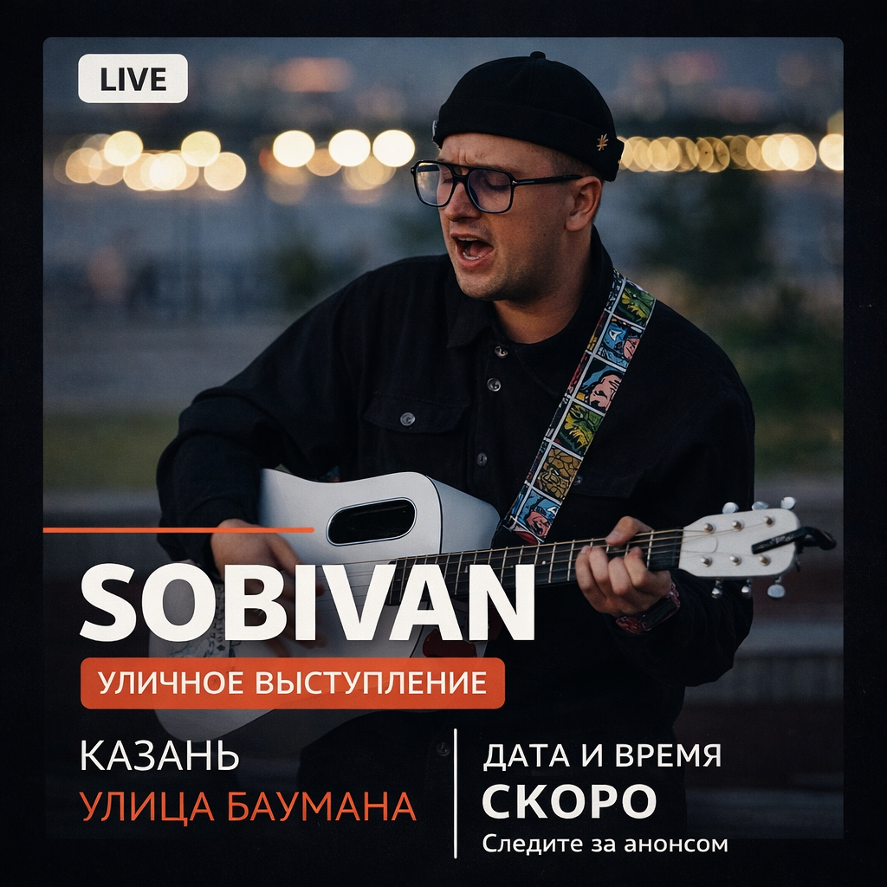
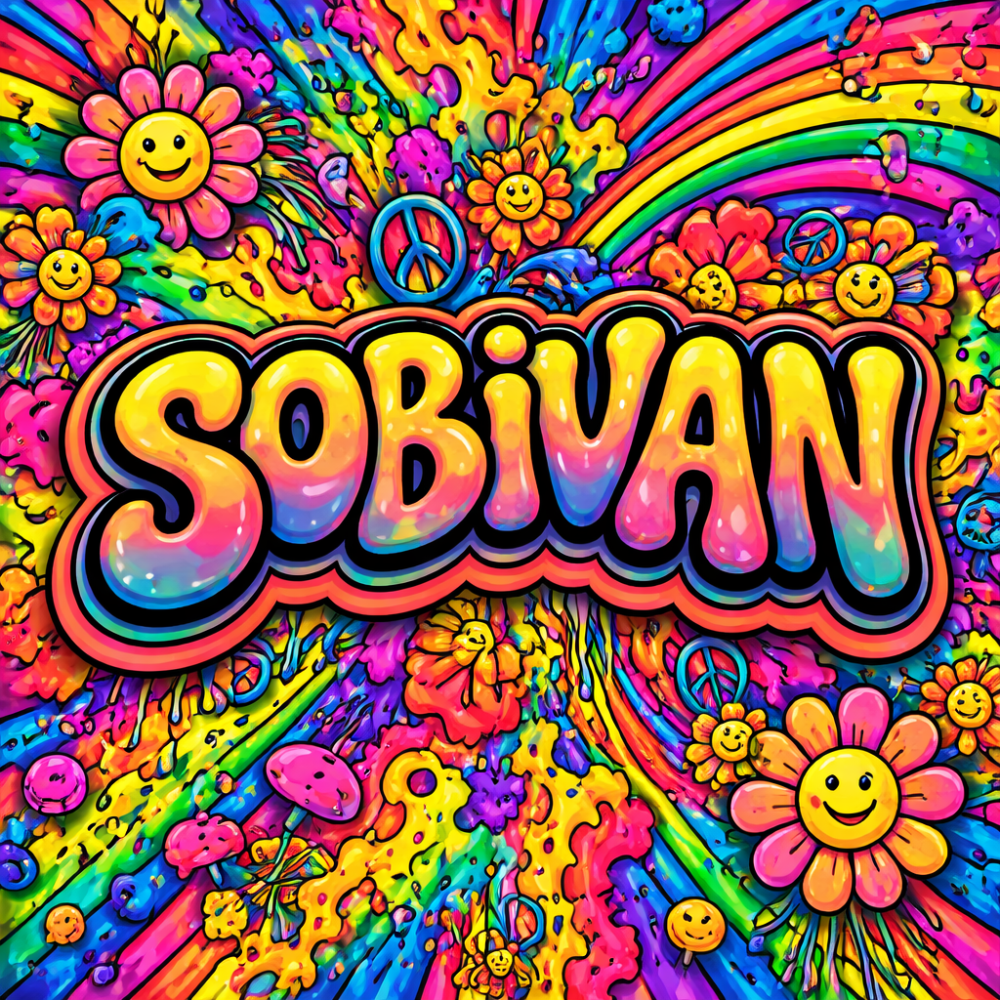
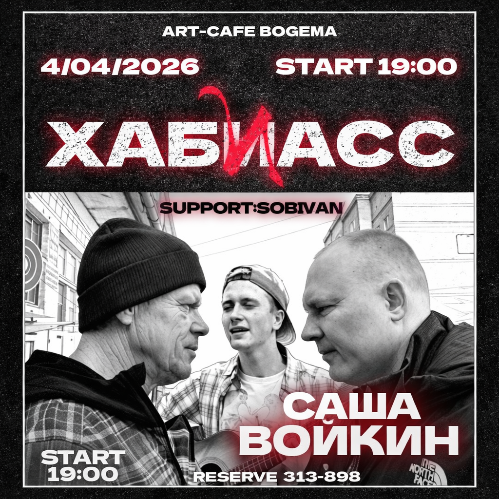
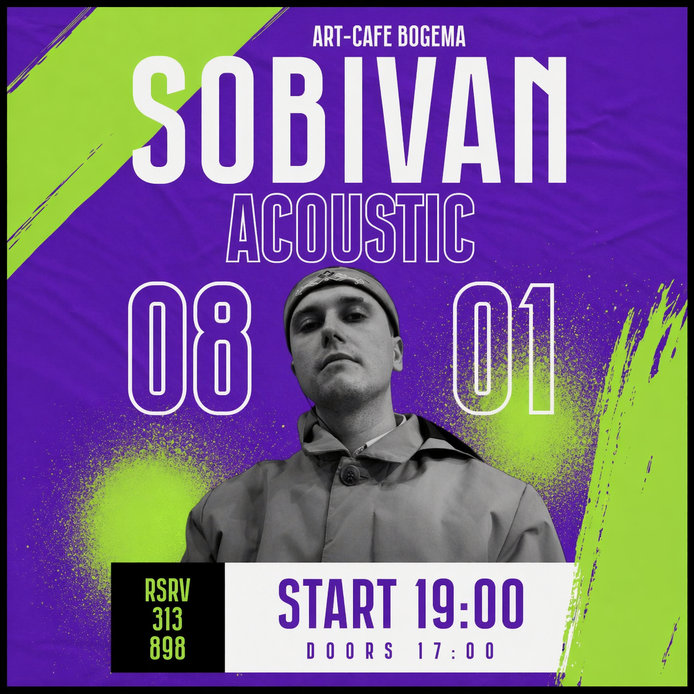
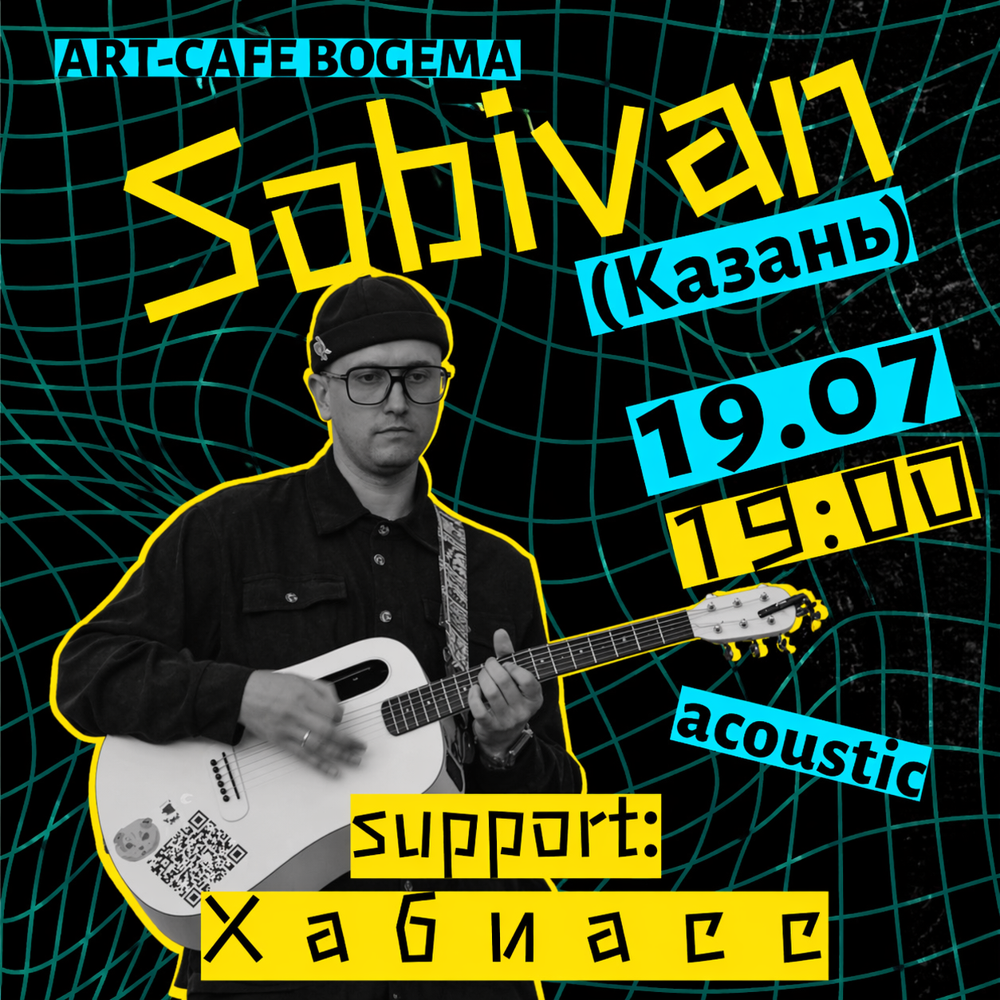

Artist Page
SOBIVAN
нонкомформизм и рэп

Альт-рок с элементами рэпа и уличной энергетикой. SOBIVAN пишет песни так, будто они рождаются прямо здесь и сейчас.
В его музыке — живые гитары, простые аккорды и намеренно прямолинейный звук без лишнего глянца. Тексты строятся вокруг внутренних конфликтов, честных сомнений, уличной философии и желания говорить без масок. Слушай!

Последний релиз
Дети солнца СинглАфиша
Ближайшие концерты
Прошедшие концерты 3



Популярные треки
Тексты и аккорды песен
Припев
Куплет 1
Am C G Dm/F
Допитый стакан, разбиты мечты
Я думал, что так будет всегда
Я думал, не будет тупой суеты
Я верил, я знал: я один до конца